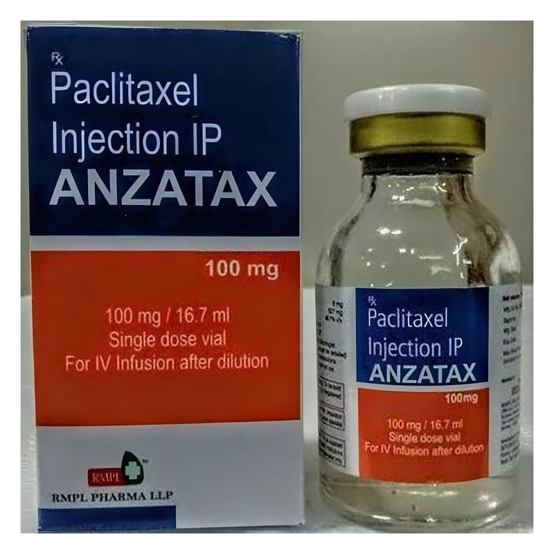

Anzatax 100 mg/16,7 ml İnfüzyon İçin Konsantre Çözelti

Ne için kullanılır
KT · Bölüm 1ANZATAX, taksan olarak adlandırılan antikanser ilaç grubuna dahildir. Bu ilaçlar kanserli hücrelerin büyümesini engeller. ANZATAX 100 mg/16.7 mİ konsantre çözeltinin her mililitresi 6 mg paklitaksel içerir. ANZATAX 100 mg/16.7 mİ konsantre çözelti, 1 flakonluk ambalaj formları ile kullanıma sunulmaktadır. ANZATAX, yumurtalık ve meme kanseri tedavisinde, bir çeşit akciğer kanseri tedavisinde (Küçük Hücreli Olmayan Akciğer Kanseri) ve Kaposi sarkomu tedavisinde kullanılır.